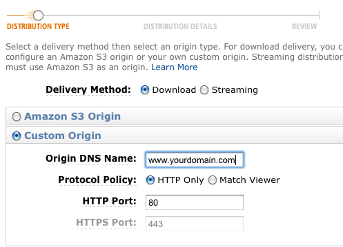

In this post I will cover a simple way to configure Magento to use the Amazon CloudFront CDN service and to create a CloudFront distrubution that mirrors the static files in your site. This method relies on the custom origin functionality announced late last year when CloudFront came out of beta. But first, a little background.
A CDN (content distribution network) is a network of servers that puts your files and content closer to the user requesting them, and thus they can get the quicker. Using a CDN has a nice side effect of offloading some work from your own server too – which if you use Apache means less processes on your server for each customer.
When Amazon first announced CloudFront I got very excited about the prospect of writing an extension to automatically sync a Magento store’s media with an S3 bucket, to enable this simple, affordable CDN solution. Alas, it turned out to be quite hairy dealing with the subtle race conditions that can occur when first accessing a specific media file that may not be available on the CDN yet.
With the introduction of custom origin functionality there is no situation where the CDN won’t have the file. If the CDN doesn’t have the file, it gets it from the underlying source server, if it already has it, it serves it. This means the first request for a file will be a bit slower, but after that it’ll be quick.
So to make a CloudFront distribution work in Magento it only takes two steps.
Step 1: Create the CloudFront distribution
You can do this on the command line with the aws tools, or through the Amazon AWS console. Let’s take pictures of the console, it’s getting late.
First login to the console, and select the CloudFront tab. Click the Create Distribution button as shown.
The dialog box that pops up will guide you through the creation process. There’s not much to it.

Specify a custom origin and then enter the current domain name of your site as the origin. The option to match the viewer is not required, it makes little difference either way as far as I’m aware.
In the next step you will probably want HTTPS and HTTP, and it’s a chance to add the CNAME in advance (if you think you want a CNAME, read the next section first). If you’re unsure don’t worry you can edit it later.

Review your configuration and save the distribution, it can take 10 minutes or so to become available, you can test it by going to the url for your store logo (something) like this http://d56xhwfHe9rhq4.cloudfront.net/skin/frontend/package/theme/images/logo.gif. You should see your logo.
Step 2: Configure Magento to use it
Base url’s can be a major pain in modern web apps, but Magento has a pretty solid framework for them that makes adding a CDN very easy.
Navigate to System -> Configuration -> Web and specify your distribution URL from step 1 as the Base Skin URL and Base Media URL in the Unsecure section.
The URL’s for skin and media should look something like this, don’t forget the trailing slash:
http://d56xhwfHe9rhq4.cloudfront.net/skin/ http://d56xhwfHe9rhq4.cloudfront.net/media/ |
Note: You can add this in the Secure section too if you want to, just make sure you specified HTTPS in your CloudFront distribution when you created it. Also cloudfront doesn’t do custom SSL certificates, so if you do the CNAME step below, you won’t also be able to do HTTPS connections with it. I’m sure Amazon’ll be working on this, they have it for the elastic load balancer already.
Extra for experts: CNAME the distribution
So the only bummer about what we have so far is the name of the server the files are coming from, it looks a bit dumb if the user sees it in the browser status bar, or looks at the source. We can mask it with a CNAME, for example we can map content.yourdomain.com to the CloudFront distribution you created. I won’t cover creating a CNAME here, it’s well documented in a number of places and your host or domain registrar will be able to point you to a suitable guide.
Once you have the CNAME setup and it has propgated around the internet, you can safely update the base url’s in your Magento configuration to point to your nice tidy CNAME domain, like content.yourdomain.com. Only put them in the Unsecure section though, as Cloudfront cannot serve HTTPS content from custom CNAME’s yet.
Javascript and the Same Origin Policy
Javascript files are mostly static too, just like css, skin and meda files. This means that we can serve them from a CDN. There’s a catch though. Magento’s own admin section has a little note about javascript loading from a subdomain. I understand this is a reference to the same origin policy that browsers use to protect you from malicious javascript from other domains.
Javascript loaded by a script tag should be fine either way, but I haven’t tested it extensively and wouldn’t suggest you use a CloudFront distribution or a CNAME’d subdomain as your javascript base url on a production Magento store unless you had tested it first. If anyone has more information about this please let me know.
What about updating the files when they change?
Good question! Files will expire from the network based on the expiry specified when they were retrieved. I’m assuming in a production webstore these things won’t be changing too often, a CDN setup wouldn’t be good for a store whose product images or logo change frequently for example.
If you really need a file to change quickly then you can either revert to not using the CDN (i.e undo step 2 above) or you can issue an invalidation request. This doesn’t have a UI yet, so to do it you need to be comfortable with some scripting. Issuing an invalidation request for all files in a particular theme, or all media files from the Magento admin would be a simple but quite useful extension, I think.
So that’s it, putting your Magento static files onto a enterprise quality CDN like CloudFront is easy and fun!
Couple this with the (awesome) One Pica’s CDN extension and your store will literally fly 🙂 http://www.magentocommerce.com/magento-connect/One+Pica/extension/1279/one-pica-image-cdn
Can you elaborate on that a little Ignacio, doesn’t the extension do the same as what I am proposing can be done here without one?
Ashley,
From One Pica’s CDN extension description:
“…The extension automatically distributes category and properly-sized product images to a CDN when they are referenced in the Magento templates. This code extends the functionality of category and product image getUrl() to determine the existence of the file on the CDN, push the image to the correct location if it isn’t found, and return the CDN-specific URL…”
So, your article covers the skin and media files, One Pica’s CDN stuff covers products and categories images, and it works great, we have used it in tens of sites with great results, it works seamlessly integrated into Magento, good stuff.
Cheers!
I think with CloudFront custom origin’s you’ll get this functionality too?
All the product and category images are located under
media/catalogand all references to media files are aimed at the CloudFront distribution with this setup.When CloudFront is missing a file it simply fetches it, so for example on a product page it may request:
cdn.domain.com/media/catalog/product/cache/3/image/9df78eab33525d08d6e5fb8d27136e95/n/o/nooskimouse01.2.jpgWhich if cloud front does not have it will get and cache from:
www.domain.com/media/catalog/product/cache/3/image/9df78eab33525d08d6e5fb8d27136e95/n/o/nooskimouse01.2.jpgSo I think it’s covered, I may have missed something though?
@Ashely,
Well, that’s a partial solution for products and categories since you’ll be getting a lot of image links back to your site unless you frequently upload new images.
One Pica’s CDN extension is integrated with Magento in a way that it’ll upload any image resource that has not been uploaded yet, and even better, it uses Magento’s cache features to re-upload stuff when you clear image’s cache.
In short words, once installed and setup properly, you don’t have to worry about manually uploading products or images, the extension will do the nasty job on demand and in background.
Cheers!
I think this article is a much more efficient way of setting up a CDN. My experience with the One Pica CDN extension has not been good. We have had a lot of compatibility issues and problems with really customized themes. Setting up what is outlined in this article doesn’t require any extension and works really well for a production site. We don’t use Amazon (it was too slow), we use Edgecast setup the exact same way.
@Ignacio @Ashley would we be able to use OnePica for the catalog images and this method for all else in the media folder (excluding catalog) ?
I’m still not 100% convinced you need to do anything special for the catalog images, in the test store I set up, catalog images were being served over the CDN as expected…
The invalidation/expiry may be an issue – in which case a more robust method of handling what content is and is not in the CDN network would be useful.
Tried OnePica, can’t get it to work on CloudFront… maybe we’re doing something wrong – could do with an example.
@Ashley your method works, but are you sure caching is an issue?
Hi Ashley, would this also serve as a site backup?
I’m confused – does that mean you need to view the page, and then upload the source image to the cdn with the random cache path that magento generates? That seems like a pain.
Since cloudfront is caching the image anyway, why can’t Magento just pick the image straight out of the cdn?
@dbcn – no, Cloudfront pulls the file when it realizes it does not have it.
So Magento renders a page for a say ‘product A’ and when it writes out the url for the image it might be src=”www.domain.com/cache-key/image.png”. So normally your browser then requests http://www.domain.com/cache-key/image.png, gets the image and renders it.
This change tells Magento to write out a different url, so instead of http://www.domain.com it is cdn.domain.com. So now when that url is requested by your browser, it is requesting it from Cloudfront. If Cloudfront already has the file, it will serve it fast from an edge location. If it doesn’t have the image it will fetch it from http://www.domain.com (being the Cloudfront origin you defined when you set it up) and that’s where Magento would _normally_ serve the image up from. Hope that explains it?
@Billy – no, I mean a lot of files are mirrored on the Amazon servers as a result of using this technique, but you cannot really access them in the event of a data loss. What you need is Cloud Backup.
@Ashley – Javascript works just fine. My entire static content is being served via CloudFront now. Working great on my store located at: http://www.PureHerbalCure.com
@Ignacio – Extension is way to complicated to do something that can be done in a simpler way as Ashley has demonstrated here. I did install the extension on a test store, scratched my head and forgot about it a while later. 🙂
@ldn_tech_exec – Yes, caching is an issue with this. Specially when you move onto SSL during checkout. I have caching disabled on my store for this reason. The downside is that http requests on CloudFront increase tremendously.
I was actually brushing up on the SMTP Pro until I read the CDN headline. After spending several days trying to get One PICA to work with RackSpace I finally gave up! I hope they can iron out all the bugs (as they claim they already have) and I will be back in there testing it again if they do.
So, when Ashley throws a headline referring S3 setup it’s got to be worth the read and it is. The benefits of a CDN make it an absolute must especially when Google has ear marked page load speed as an important factor in it’s page ranking (along side all those other important factors).
I haven’t tested One PICA’s performance in the S3 environment, as I am hosting on a Rackspace Cloud Server and wanted to keep everything in-house so-to-speak. Still I have setup an Amazon account as standby just because I like to cover all the bases.
Ashley’s (sorry to talk about you in the third person Ashley – I know your listening) setup with Skin and Media URL’s is for all intense purposes how I assumed the setup should be as standard for any CDN ie. simple! In fact I guess what all us none-developers are looking for is a plug-n-play extension that just works rather than having to learn php modules, Apache, pear and all those shenanigans like bug fixes.
Before I go off and have a play with the rather splendid SMTP Pro I just wanted to say, RackSpace keeps getting a kickin for not being able to host magento on Cloud Servers but this is all nonsense. I currently have seven stores running on one server using less than 1.5gb or ram and it handles all Apache processes quite nicely (especially after a bit of database tweaking). Getting the CDN to work would just mean faster sites – and we all love speed don’t we!!!
Thanks for the article!
I tried doing this myself before reading and I’ve experienced a side effect while trying to use a CDN (cloudfront) by changing the URL’s in the default magento config – when I try to upload images for products (or any other images, probably), the javascript doesn’t execute. I don’t see any errors, nothing. I click on “Browse Files”, I choose the file I want to upload, and it’s as if I did nothing. The little ajax progress bar never appears.
Has anyone experienced this?
I’m not running on https, but I am using a cname pointing to cloudfront. I thought that might be better for cross-domain javascript execution.
I think what may be happening is that the ajax is executing and trying to post directly to the CDN instead of my web server and failing silently. If that is the case, how do you work around this?
I know what you mean UK Fishing the other CDN extensions just seemed to make things harder than it felt like they needed to be. This solution seems pretty easy, though Gabe has pointed out there could be some weaknesses with it.
Gabe, I haven’t tested that – but I think javascript is mostly OK, certainly I’ve had good feedback about it. It might actually be flash-based uploading that Magento does in that part of the admin? I’m not a big
fanuser of flash so I’m not sure how they do their security model. You could try disabling flash and see if Magento falls back to a plain HTML upload? (just as a test).Thanks Ashley for your excellent simplification of the how to implement a CDN with Magento.
I sell large downloads which from time to time get updated…when I update one of these files, besides replacing the download file on my regular server, do I need to do anything to ensure that the Cloudfront version gets updated too, rather than continuing to serve its cached version?
Hi Ashley – Thanks for the idea of turning off the flash. I bet you anything that was the issue.
I worked around the issue by putting the admin in a completely separate magento website, which does not use CDN urls. Works like a charm. =) And since admin traffic should be pretty limited, I’m not worried about serving it’s assets through CDN.
Ashley – what do you use for cache busting cloudfront? Since appending timestamps to the end of url’s don’t work, I’ve seen others mention using dynamic asset paths handled by mod_rewrite and mapped back to the correct path name. Might be a handy extension to put together. Would need to have some way of telling magento to switch out media urls when you change css/js files. Maybe just an option you update in the config panel that sets the dynamic part of the url.
Good question Gabe. I’m currently only using it on sites where the static content is largely fixed (like my blog) and a couple of smaller webstores.
I think the ideal would be a Magento admin UI to invalidate the content, but a simple approach is just to change the path as you suggest.
Correct me if I am wrong (I haven’t tested this) but if you configure Magento to serve media from
cdn.you.com/abc/and then later change it tocdn.you.com/def/then the cloudfront will see all images and content as new (i. a new path).So then you just need a symlink in the root of your store pointing to the real media location.
If this works you could even use your version release number as the abc?
Gabe,
“I tried doing this myself before reading and I’ve experienced a side effect while trying to use a CDN (cloudfront) by changing the URL’s in the default magento config – when I try to upload images for products (or any other images, probably), the javascript doesn’t execute. I don’t see any errors, nothing. I click on “Browse Files”, I choose the file I want to upload, and it’s as if I did nothing. The little ajax progress bar never appears.
Has anyone experienced this?”
Yes, currently going through this nightmare, exactly the same issues you experienced. After racking my brains all day (and night) I just can’t figure it out. Going to try disabling the One PICA extension and clear the cache to see if things return to normal.
If you try to upload a larger file it runs through the uploading process but still results in the red box and remove button.
Ashley Wan Kenobi your our only hope!!!
He’s back!!!
I thought I would test disabling Flash as Ashley advised, this results in the disappearance of the Browse and Upload buttons.
I agree with Gabe “I think what may be happening is that the ajax is executing and trying to post directly to the CDN instead of my web server and failing silently. If that is the case, how do you work around this?”
Using One PICA CDN didn’t throw any problems directly (none that I was aware of anyhoo) and I was still able to upload images. Then changed the unsecure media URL to my Rackspace CDN URL to see if there was any more gains to be had, . As I listed new products I reverted back to the correct media URL {{unsecure}}media/ cleared cache — problems uploading images “No Flash loader”.
Thankfully, I have backed up but before going down this route however I would like to crack this issue (don’t like defeat). But I can’t seem to get magento to look upon the media folder as a standard setup, like Gabe says it is almost as though it still thinks the upload is going the CDN route. How can I convince it otherwise – Flush Catalog Images Cache, Disable One PICA, Symlinks, pray to the baby Jesus!
I’m off again…
Hi team, I’m flat out today so I can’t offer much help, but I just had a quick look at the uploader code – the flash code gets passed an endpoint where it sends the data. If that is the CDN url not the store base url then it’ll be trying to send the data to cloudfront (which it can’t do).
You can see the url being passed in the html of the product edit page (inspect it with firebug).
There’s a CDATA block that looks to have all the config, and what appears to be the url where flash will send the data.
@UK Fishing: did you manage to solve it? This could do the trick to force the backend to use the “local” files:
Change the website scope in the System>Config>Web section of the admin to your frontend store, untick the “Use Website” checkbox and set the “Base Media URL” to the CDN. Change the scope back to “Default Config” and set the “Base Media URL” to {{unsecure_base_url}}media/
Adapted from: http://stackoverflow.com/questions/6657420/possible-javascript-issue-when-hosting-skin-files-on-cdn
@Ashley: did you had some feedback on using js files from a CDN?
If I google a bit about this, it seems fairly common practice to serve magento’s js files from a cdn with or without using a CNAME.
Thanks!
Thanks Ashley, your tutorial is very helpful! I always find alternative solution before I decide to use plugin/extensions.
Some extensions are suck!
Very nice Ashley! I’m currently using Pica CDN with decent results, I’m most likely going to switch to your suggestion as the benefits of js/css on cloudfront are really appealing.
This may be a bit off topic, but I bet you’d have a lot of interested parties in a Magento AWS mirroring set up. Let me know if this would be of interest to you.
Thanks,
Jonas
Thanks for this great article! Let me ask you a question:
Our site is not kind of beta stage.However, we’re uploading/changing new static content regularly and it’s like a process will not be ending soon. Changing the product images with the new ones such as uploading high quality thumbnails instead of old ones, making some design changes if needed.
As you also know, Amazon Cloudfront has 24 hours caching expiry so: do we need to use some kind of purge tool developed by 3rd party sources? https://chrome.google.com/webstore/detail/gadbenpggeagjgnameagcpjnjdlckkpb/reviews
We don’t know if the users using Amazon CDN , is aware of this tool, if they do , we need to get some feedback from them if the extension is working well or not.
Thanks,
David
super duper bummer that no one has written a plug-in for mage like this…
RTMP Streaming Video Player allows you to quickly implement RTMP streaming video on your site for Flowplayer and JWPlayer. Supports all popular RTMP streaming services (Cloudfront, Adobe, Wowza, etc.).
The commercial version also supports RTMP Streaming Video Player allows you to quickly implement RTMP streaming video on your site for Flowplayer and JWPlayer. Supports all popular RTMP streaming services (Cloudfront, Adobe, Wowza, etc.). The commercial version also supports Cloudfront private distribution streaming with authenticated (expiring) url’s. .
—
what i mean is Cloudfront private distribution streaming with authenticated (expiring) url’s. . protect any content
as usual, what is trivial in wordpress is not available in mage
oh by the way, this is a cool approach to offloading media. I am currently doing it through my host (its included in the hosting package)dont know which would be “faster / better”
This tutorial is over a year old. Nevertheless, it worked like a charm. Got me up and running in a snap! Now all my images pull from Amazon’s CDN. Next step, edgecast!
Thank you for the great tutorial Ashley!
hi
it was extremely easy to follow your tutorial and set magento to use cloudfront.
i’ve set cdn1 subdomain via CNAME but problem what i face now is, that the whole site is actually available on this subdomain what is not good for SEO purposes – duplicate content.
is there any way how to restrict content on cloudfront? so it loads just images and javascript but not actual html or php files?
ta
Sorry if this is a silly question but when it came to creating your CNAME, what did you put in the points to field?
Thanks!
It was a dumb question and I figured this out =)
Amazon’s UI has changed a bit, but this tutorial still works perfectly. Getting it set up with CNAMES took just a few minutes. Thanks a lot 🙂
Thanks for this.
New to Magento and have a dog of a site I’m taking over, so trying to squeeze each bit of performance out.
Setup media.domain.com as origin (subdomain pointed to domain.com/media) and cdn.domain.com as CNAME. Actual implementation took all of 5mins after reading through your guide. Had setup Edgecast via MediaTemple before for WordPress, but somehow my mind easily gets confused over the order of pulling between origin, host and all the subdomain redirects 😛
Great article for getting started with Cloudfront and Magento. After setting this up it didn’t take long to realize how great Cloudfront is for CDN but that the invalidation was painful. Later, after reading up on html5boilerplate and their solution for using “cache busting” with far-future expires headers it dawned on me that the same applied to CDN and a module would easily handle this in Magento.
Boilerplate article: https://github.com/h5bp/html5-boilerplate/wiki/cachebusting
My module, Magento Cachebuster: https://github.com/gknoppe-guidance/magento-cachebuster
Hope it helps everyone
Well, this method won’t invalidate OnePica extension at all, since it is aimed primarly at S3 and other CDNs without custom origin pull support (CloudFront support is relatively new).
Otherwise great article, Ashley, as always!
Great post, thank you.
But instead of the original domain (as origin for the static files) like http://www.domain.tld I recommend setting up an own host for just that purpose, e.g. cdn-origin.domain.tld and to configure the host in a way that only the directories /media, /skin and /js can be accessed.
This will prevent your setup from producing duplicate content.
I would also suggest to have a look at GoGrid cdn which is edgecast reseller and it is so much faster than Amazon cloud front!
http://blog.ryankearney.com/2009/12/comparing-cdn-performance-part-2/
@Jan,
I agree with you, that is definitely a smarter way of doing it. But, what about the https?
Thanks Ashley! Great resource here. I know a few people in the comments asked about a module to help with the cache-busting. I recently stumbled onto this module by Guidance:
https://github.com/gknoppe-guidance/magento-cachebuster
I’m checking it out myself now. Haven’t deployed it yet. I think the only thing that I’m wondering is what the performance hit looks like. The way that it works is that it observes controller_action_postdispatch, parses and replaces the HTML using regular expressions.
Hi Kalen, thanks for the feedback.
I have seen that extension and agree that it seems like quite a lot of overhead.
I think a better way would be to change the .htaccess to treat a certain type of subdirectory in the path as not being there.
For example:
http://www.yourstore.com/content-2013-05-21/skin
http://www.yourstore.com/content-2013-05-21/js
…
So those just get mapped to the underlying skin and js directories.
This way the extension could simply change the base url to the new date (or whatever pattern you like, maybe unix timestamps) to cause a full invalidation of all static assets. Then Magento’s built in URL functionality should ‘just work’, right?
This solution is compelling,
However, what happens if I have a hosting with limited space and only want to host original images and send all derivative ones (thumbnails, feature images, etc) to Amazon S3.
Do you think in this case, the extension would help us saving space by always uploading it to S3 and not caching the images in our hosting, right now we keep running out of space every week and we need to clean the cache to avoid this problem.
Thanks
@Raul Who’s your host? Flickr just announced they’re giving away 1TB of image storage, seems like hosts need to lift their storage game!
Definitely re: the invalidation approach. I think I’ll go that route.
Have you done any analysis on the difference in page load speeds with cloudfront? Or maybe there are generic non-Magento-specific ones out there.
I just did some comparison against my current host and at one point both were being served up in about 100ms. Then a few minutes later my host was at around 400ms and cloudfront was still around 100ms.
Implemented a little MageRun command to refresh skin and JS url’s:
https://github.com/kalenjordan/magerun-addons/blob/master/README.md#bust-frontend-browser-caches